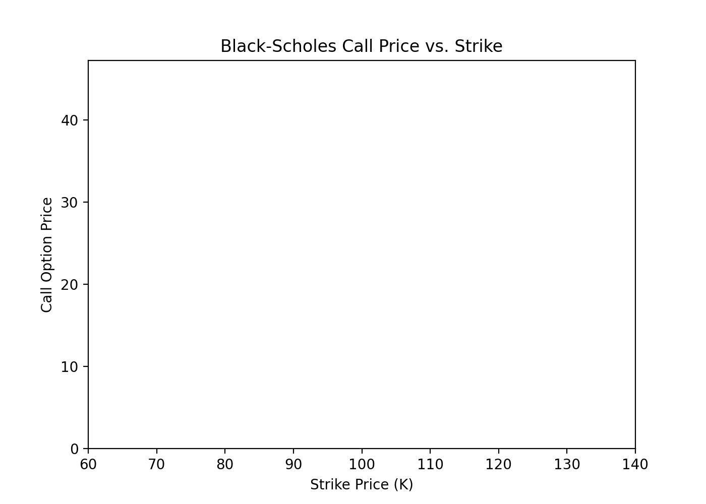

Overview
This page explores two foundational models for European option pricing: the Black-Scholes formula and the Binomial tree model.
Black-Scholes Formula
The Black-Scholes model gives a closed-form solution for the price of a European call option:
\[
C = S_0 N(d_1) - K e^{-rT} N(d_2)
\]
where
\[
d_1 = \frac{\ln(S_0/K) + (r + \frac{1}{2}\sigma^2)T}{\sigma\sqrt{T}}, \quad d_2 = d_1 - \sigma\sqrt{T}
\]
- \( S_0 \): initial stock price
- \( K \): strike price
- \( r \): risk-free rate
- \( \sigma \): volatility
- \( T \): time to maturity
- \( N(\cdot) \): standard normal CDF
Python Implementation
import numpy as np
from scipy.stats import norm
def black_scholes_call(S0, K, r, sigma, T):
d1 = (np.log(S0/K) + (r + 0.5*sigma**2)*T) / (sigma*np.sqrt(T))
d2 = d1 - sigma*np.sqrt(T)
call = S0 * norm.cdf(d1) - K * np.exp(-r*T) * norm.cdf(d2)
return call
# Example usage
price = black_scholes_call(100, 100, 0.05, 0.2, 1)
print(f"Call price: {price:.2f}")
Binomial Tree Model
The binomial model approximates the price by simulating possible price paths over discrete time steps.
def binomial_call(S0, K, r, sigma, T, N=100):
dt = T / N
u = np.exp(sigma * np.sqrt(dt))
d = 1 / u
p = (np.exp(r*dt) - d) / (u - d)
# Terminal payoffs
ST = S0 * u**np.arange(N, -1, -1) * d**np.arange(0, N+1)
payoff = np.maximum(ST - K, 0)
# Backward induction
for _ in range(N):
payoff = np.exp(-r*dt) * (p * payoff[:-1] + (1-p) * payoff[1:])
return payoff[0]
# Example usage
price = binomial_call(100, 100, 0.05, 0.2, 1)
print(f"Call price: {price:.2f}")
Visualization
The GIF below shows how the Black-Scholes call price varies with strike price for fixed parameters.

The Black-Scholes price decreases as the strike price increases, as expected.